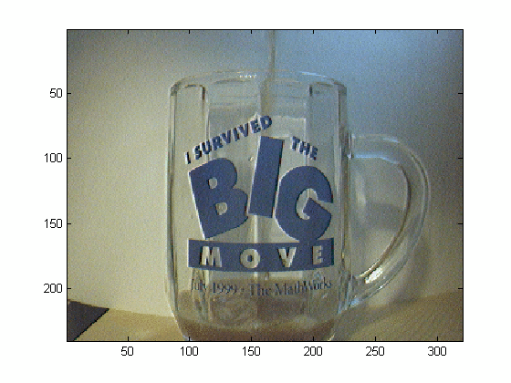
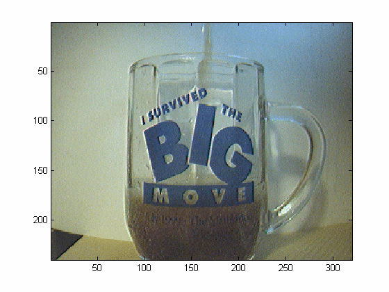
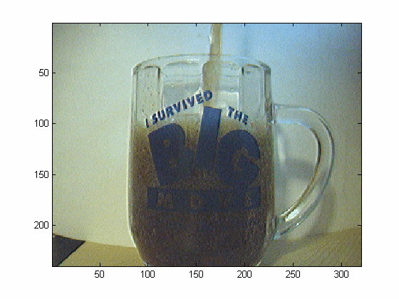

Logging Data To Memory
Overview
Before logging data, images from an image acquisition device can be previewed live using the PREVIEW function. Calling the PREVIEW function, will open a preview window. To close the preview window, use the CLOSEPREVIEW function.
% Access an image acquisition device. vidobj = videoinput('winvideo', 1);
% Open the preview window.
preview(vidobj)To acquire a single frame, use the GETSNAPSHOT function.
snapshot = getsnapshot(vidobj);
% Display the frame in a figure window.
imagesc(snapshot)To specify the number of frames to log upon triggering, configure the video input object's FramesPerTrigger property.
% Configure the number of frames to log upon triggering. set(vidobj, 'FramesPerTrigger', 50);
An image acquisition object must be running before data can be logged. To initiate an acquisition, use the START function.
start(vidobj)
% Notice that the number of frames being logged to memory ...
numAvail = vidobj.FramesAvailable
numAvail =
7
% ... is increasing ...
numAvail = vidobj.FramesAvailable
numAvail =
14
% ... over time.
numAvail = vidobj.FramesAvailable
numAvail =
21
To retrieve logged data from memory, use the GETDATA function with the video input object and the number of frames to retrieve.
% Retrieve some of the logged frames.
imageData = getdata(vidobj, 30);% Notice the number of frames remaining in memory.
numAvail = vidobj.FramesAvailable
numAvail =
13
% Display the last frame extracted from memory.
imagesc(imageData(:,:,:,30))To acquire data continuously, configure the FramesPerTrigger property to infinity. Upon triggering, data will be logged until the video input object stops running. To stop an object from running, use the STOP function.
set(vidobj, 'FramesPerTrigger', inf)% Initiate the acquisition.
start(vidobj)% Notice the number of frames in memory.
numAvail = vidobj.FramesAvailable
numAvail =
6
% Stop the acquisition.
stop(vidobj)% View the total number of frames that were logged before stopping. numAcquired = get(vidobj, 'FramesAcquired')
numAcquired =
13
% Retrieve all logged data.
imageData = getdata(vidobj, numAcquired);% Display one of the logged frames.
imagesc(imageData(:,:,:,10))To view the most recently logged image data without extracting it from memory, use the PEEKDATA function with the video input object and the number of frames to view. Viewing logged data using PEEKDATA will not remove any logged data from memory.
% Configure the number of frames to log upon triggering.
vidobj.FramesPerTrigger = 35;% Initiate the acquisition.
start(vidobj)% Wait for the acquisition to finish.
wait(vidobj, 3);% Verify the number of frames logged to memory.
numAvail = vidobj.FramesAvailable
numAvail =
35
% Access the logged data without extracting them from memory.
imageData = peekdata(vidobj, numAvail);% Verify that all logged frames are still available in memory.
numFramesAvailable = vidobj.FramesAvailable
numFramesAvailable =
35
Once the video input object is no longer needed, delete and clear the associated variable.
delete(vidobj) clear vidobj
See also IMAQHELP, IMAQDEVICE/PROPINFO, IMAQDEVICE/GETDATA, IMAQDEVICE/GETSNAPSHOT, IMAQDEVICE/START, IMAQDEVICE/STOP.